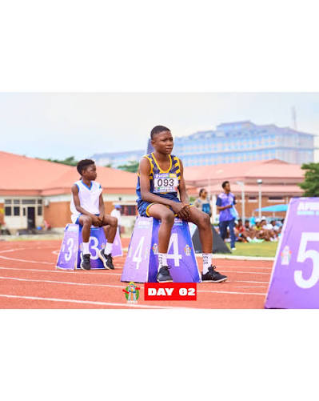

About Our Institution
Founded in 1998 with a vision to build robust intellectual foundations, Surya High School has stood for nearly three decades as a premier center of quality secondary education. Named after the sun—a timeless symbol of enlightenment, energy, and clarity—our school fosters an environment where curiosity is celebrated and disciplined effort leads to lifelong achievement.
Spread across a serene, green 12-acre campus, Surya High School serves students from Grades 6 through 12. Our holistic curriculum seamlessly integrates rigorous academic standards with ethical leadership, competitive athletics, performing arts, and community service.
We believe every learner possesses unique potential. Through small class sizes, personalized mentorship, and modern pedagogical tools, we ensure every student graduates as a confident, compassionate, and responsible global citizen.

Our Guiding Philosophy
🎯 Our Mission
To provide dynamic, inclusive, and comprehensive secondary education that inspires critical thinking, moral integrity, creativity, and a lifelong passion for learning in every student.
👁️ Our Vision
To be recognized as a leading educational institution that nurtures innovative thinkers, ethical leaders, and empathetic global citizens who positively transform their communities.
⭐ Core Values
Integrity in action, Respect for diversity, Perseverance through challenges, Collaboration in teamwork, and Excellence in all academic and personal pursuits.
From the Principal's Desk
.jpg)
"Education is not merely the accumulation of facts for an examination; it is the training of the mind to think clearly, the heart to feel deeply, and the spirit to act with courage."
At Surya High School, we partner closely with parents to create a safe, stimulating second home where teenagers can explore their talents without fear of failure. Whether in our science laboratories, debate halls, or sports arenas, our dedicated educators guide each student toward discovering their true calling.
Dr. Meera Deshmukh (M.Sc., M.Ed., Ph.D.)
Principal, Surya High SchoolOur Journey & Milestones
What began in 1998 with just 120 students and 10 passionate teachers in a modest building has grown into one of the region's most respected senior secondary institutions.
1998 — Foundation
Surya High School opened its doors with Grades 6 to 8, established by the Surya Educational Trust.
2005 — Senior Secondary Expansion
Added Grades 11 & 12 offering Science, Commerce, and Humanities streams alongside state-of-the-art laboratories.
2014 — Sports & Arts Complex
Inaugurated our indoor multi-sport auditorium, Olympic-sized track, and dedicated fine arts wing.
2022 — STEM & Digital Innovation Hub
Launched our Robotics, AI, and Coding lab, equipping students with 21st-century technological fluency.
Why Families Choose Surya High School
- 👩🏫 Experienced & Caring Faculty: Over 70% of our teachers hold postgraduate degrees with an average of 12+ years of teaching experience.
- ⚖️ Balanced Student-Teacher Ratio: Maintained at 22:1 to ensure individualized attention, remedial support, and career counseling.
- 🛡️ Safe & Eco-Friendly Campus: 24/7 CCTV surveillance, GPS-enabled school buses, infirmary with full-time nurse, and solar-powered facilities.
- 🏆 Proven University Placements: Our alumni regularly secure admissions into top national and international universities across engineering, medicine, law, and liberal arts.
World-Class Campus Facilities

🔬 Science & Robotics Labs
Dedicated Physics, Chemistry, Biology, and Robotics laboratories designed for hands-on experimentation and scientific inquiry.

📚 Digital & Print Library
Over 25,000 books, academic journals, periodicals, and e-learning terminals in a quiet, climate-controlled reading space.

⚽ Athletics & Performing Arts
Full-sized football and cricket grounds, basketball courts, indoor badminton hall, plus dedicated studios for music, dance, and theater.